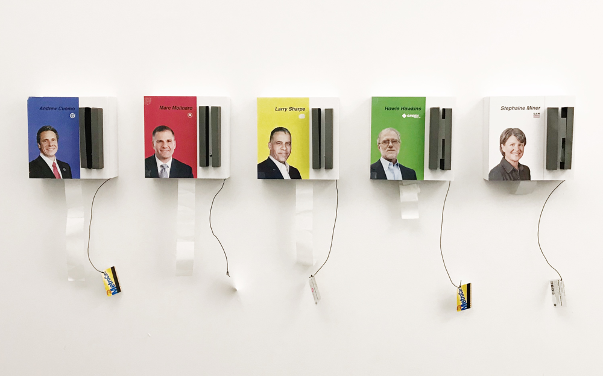
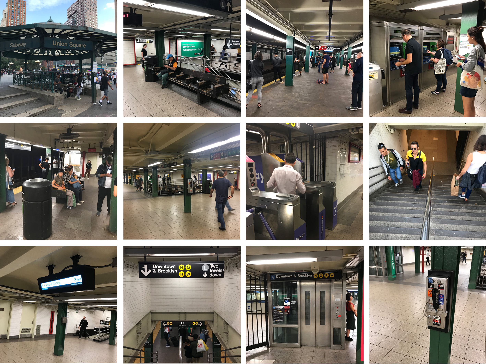
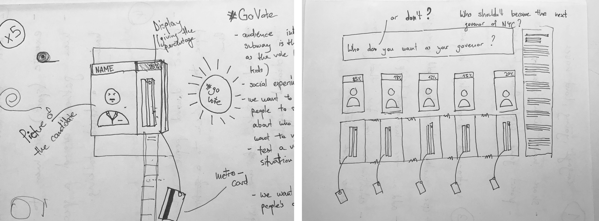
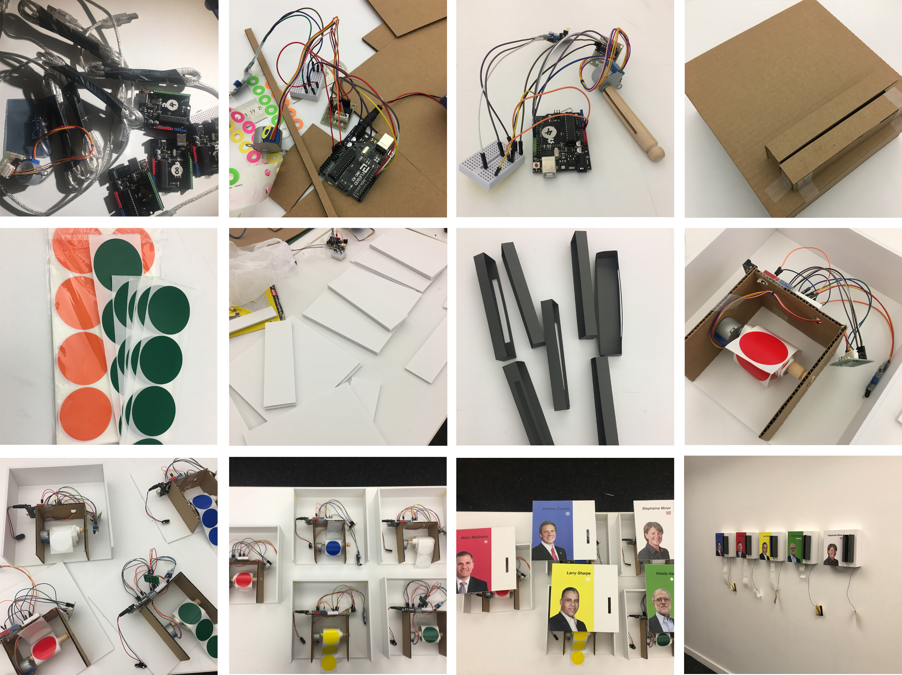

Instruction Sets for Strangers
Installation / Public Intervention
Team with Maximilian Ottokar Klein
New York
Oct. 2018 - Nov. 2018

GOAL
This project explores interface as a connector between people in socially mobile contexts. Focus on modes of interaction within the space, as well as physical, social, personal, spatial, and cultural behaviours. Create an instruction set for strangers that augments some aspect of interaction (person-to-person, person-to-group, or group to group). Combine the idea of invitation, how to “invites” people to experience it.
DESCRIPTION
On November 9th, New Yorkers can elect their new governor. As part of the Instruction Set for Strangers Challenge, my partner Max and I transformed a New York subway station into a participatory ballot box that allowed New Yorkers to participate in an early pre-election. Our goal with this installation was to make New Yorkers aware of the upcoming election, to initiate a political dialogue, and to represent the electoral relations between the individual candidates in order to predict the outcome of the election.

LOCATION
New York subway system transport 6 million commuters every day. It is the largest rapid transit system in the world. It has a very broad audience that people with a Metro-card can have access to it. The subway stations are always crowded while there is nearly no interaction between strangers. The unpleasant environment in the subway station might be one reason. So we want to design to get people to pause, engage, open up, change their mindset and in some way interact and communicate with their peers when they are waiting for the subway. In that case, we can improve people’s experiences and contribute to a more enjoyable environment.
OBSERVATION

New York Subway Station Observation
IDEATION
We want to find an issue that New Yorkers all care about and can participate in. Use the public space like the subway station to get everyone involved. The participation of the passengers can play a certain role and significance. So we want to set up a pre-election for the upcoming Governor’s election. Passengers can swipe the Metro-card to vote, which is a unique form of interaction in the subway station.
PROTOTYPE
Prototype Test
DEMO
The installation consists of five identical boxes, each dedicated to one of the candidates, and is based on the following process: The first step is for the citizens to cast their vote by swiping their own or one of the pre-assembled metro cards through a designated slot (reference to the location of the metro station). A built-in sensor based on the Ardunio platform recognizes the input and initiates a rotary motor built into the box, to which a sticker roll is attached. The sticker’s colors are in candidate’s party colors. As a result of the people’s input, the motor and the sticker roll begin to rotate 45 degrees, causing a sticker to come out of the box for the citizen to collect (second step in the installation). The remaining paper from the sticker roll below the box, along with the papers from the other boxes, forms an inverted bar chart that represents the electoral relations between the candidates and is intended to predict the outcome of the election (third step of the installation).

Swipe for your candidate,
Take your sticker,
Leave your vote...
we asked people to swipe their metrocards for their favorite candidate in the upcoming governor’s election (9th Nov)
if they swiped the card, they received a sticker in the color of their candidate’s party
the people’s votes are reflected in an inverted bar-graph beneath the boxes, representing the proportions between the candidates
the longer the paper beneath the box, the more votes the candidate received, the more popular the candidate is, the more likely the candidate becomes the next governor
we predict a close race between Andrew Cuomo, Marc Molinaro and Howie Hawkins
TEST

Test in Union Square Subway Station